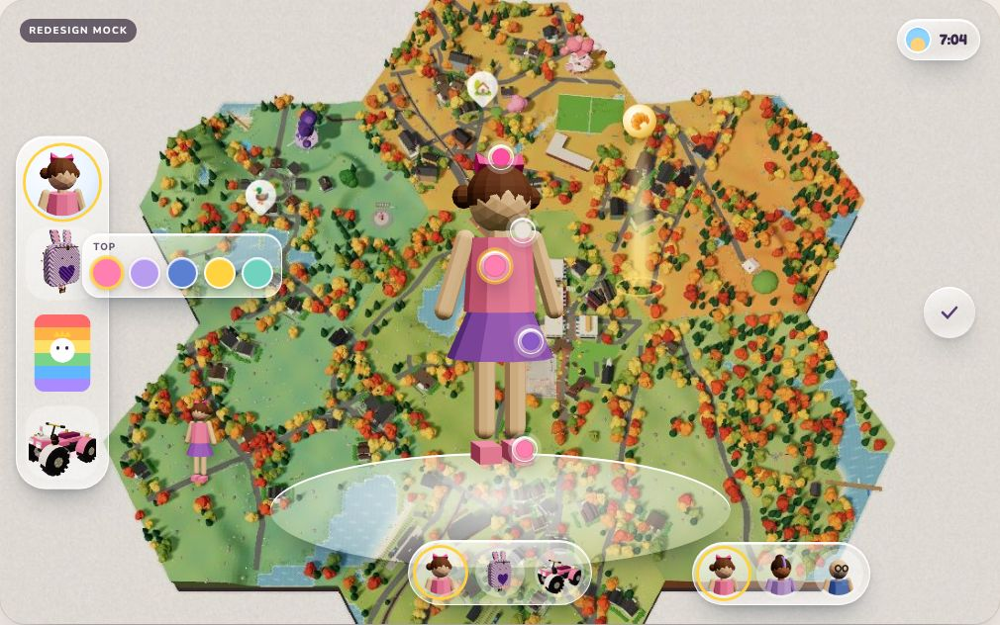
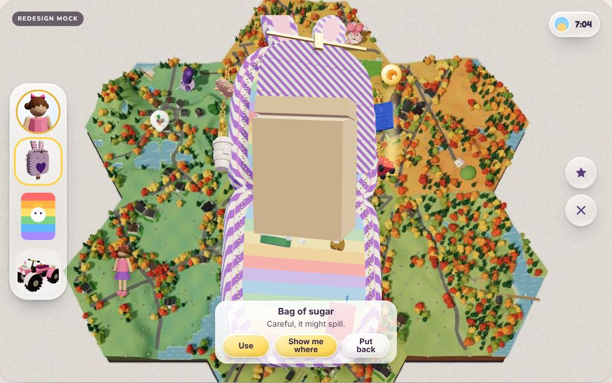
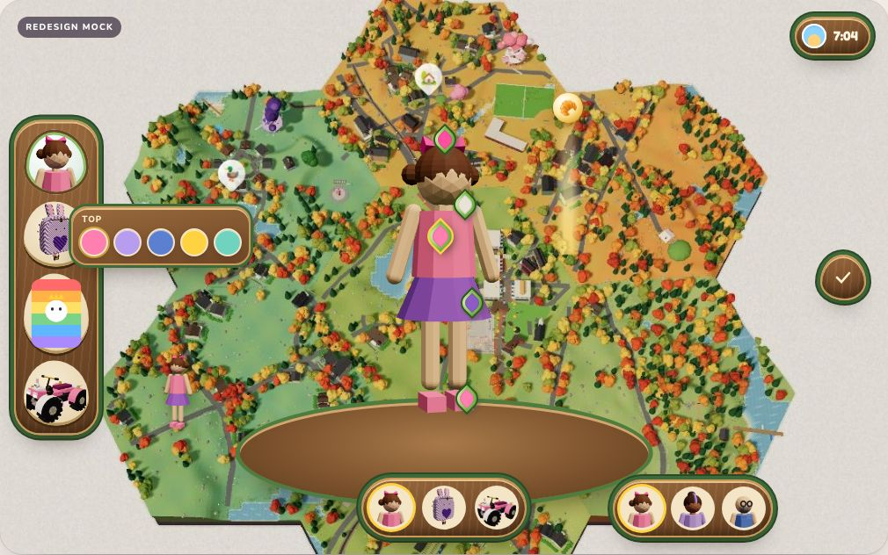
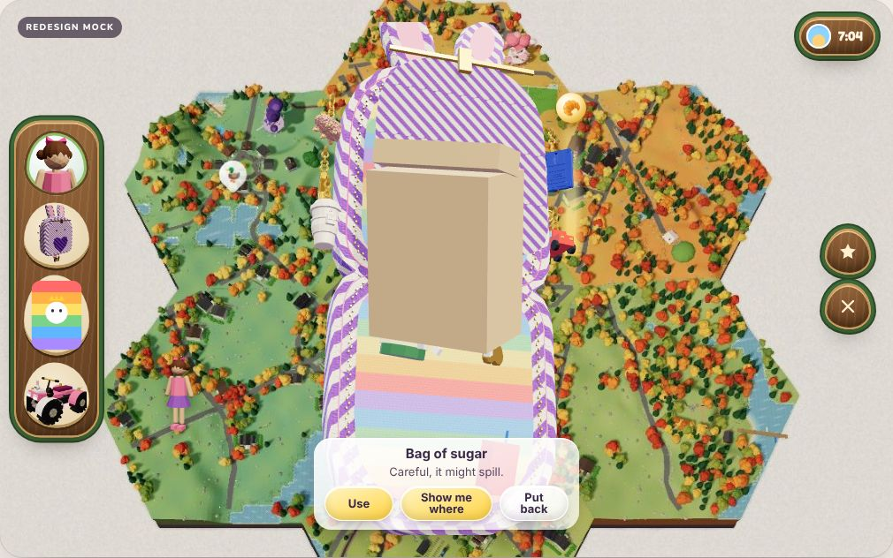
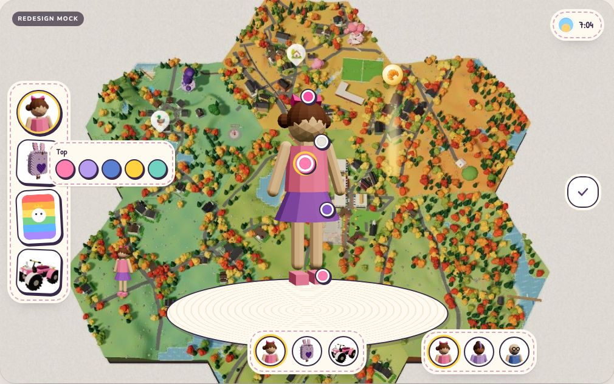
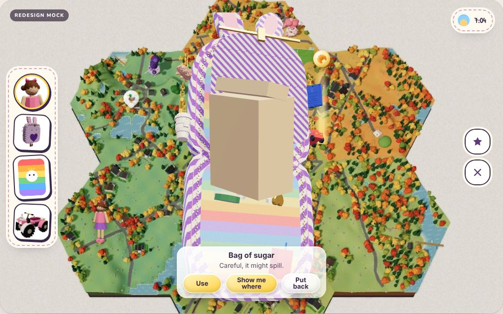

Dressing up by touching the thing itselfDrafted for review
Abbie changes her clothes, her backpack and her buggy in one place: a mirror. Little glass beads sit on the model itself, on her head, top, skirt, shoes and bag. She taps one and a short row of choices opens next to it, and the model changes straight away. Nothing gets built until you pick.


Try it
This is the redesign mock running live. Tap the mirror at the top of the left bar, then tap a bead on Abbie. The steps on its right walk through the bag, the close-up, the charms and the dressing room.
Open it full sizeThe answer, in four rules
- Wearing and carrying are separate things. The bag only carries and opens. It keeps its 3D open, zip and close-up from #536. All dressing happens at the mirror.
- You choose on the model, not from a menu. A bead sits on each body part (head, top, bottoms, shoes, extra), each part of the bag (style, colour, pattern, pocket, straps, lining) and each spot on the buggy (paint and five animal seats). Tapping the part works too. Only one row is open at a time, with no more than six choices, and the model changes as soon as she taps.
- Looks are free, and room is earned. Changing a look never costs anything and can always be undone. A bigger bag comes only from charms (choice B on the mock), so that's a reward and never something to shop for.
- One place for everyone. The same room dresses whoever is playing (Abbie, Ani or Daddy, picked from the row at the turntable's foot), and the backpack goes on whoever that is. This matches Character Studio's swappable hero draft.
What is kept apart
| Thing | What it is | Where you change it | Saved as |
|---|---|---|---|
| Her look | Looks only: head, top, bottoms, shoes and extra, coloured by material role | The mirror, "her look" station | aw-look-<who>, one for each person (Character Studio) |
| Backpack look | Looks only: style, colour, pattern, pocket, straps and lining | The mirror, "backpack" station | aw-backpack (today's store, unchanged) |
| Buggy look | Looks only: paint and the toy animals on five seats | The mirror, "buggy" station, or the buggy on the left bar | aw-buggy (today's carwash store, unchanged) |
| What she carries | Quest items and effect fuel; each one has a close-up and a "use" | The bag: open, zip, take out | aw-inventory (unchanged) |
| How much she can carry | A real upgrade: pockets, and a longer keyring | Nowhere: charms sew it on (B: automatic, or she picks one) | Upgrade levels in aw-backpack (today's UPGRADES) |
| Charms | Earned keepsakes that hang on the bag, each with one small power (C) | Nowhere: they're earned. D decides whether all of them hang or two | earnCharm / keychain in backpack.mjs |
Three looks, compared
The mock can wear each one: use the "Which look?" switch on its right. Your words, the HUD study and our grammar all pull toward liquid glass. The forest wood look is the Ranch's own dialect (wood, bells and painted signs), so it's a strong pick for wooded places. Storybook paper matches the notebook.
Liquid glass

Glass objects with depth: bright edges and a soft inner glow, never frosted or blurred. This is what you keep choosing. It lets the town and the colours show through, so it sits quietly in every place.
Forest wood


Carved wood frames, a moss rim and leaf-shaped beads. It's warm and reads clearly at a glance, but it's heavier and hides more of the world. Best as a dialect for the Ranch and forest places, not as the whole app.
Storybook paper


Stitched cream paper, inked outlines and sticker beads. It's friendly and matches the notebook, but it looks flat next to 3D models, and it hasn't styled the bag's own buttons yet.
For six-year-old fingers
Big enough to hit
Every bead has a 44-point hit ring, even when it looks smaller (Apple's minimum). On touch screens the swatches grow to 42 px with 8 px gaps.
No reading needed
Choices are colours, little pictures and her own models. The one-word row title is for grown-ups. Her voice says what changed ("A new pocket!").
Nothing to get wrong
Every tap shows on the model at once. Tapping the old choice puts it back. Nothing has to be dragged, nothing costs anything, and nothing gets deleted.
Calm and steady
One row open at a time. The figure stops turning while a row is open, so its beads hold still under her finger. Reduced motion stops the turning and the bounces.
Colour plus shape
A bead shows the current choice as a colour or a small picture, never colour alone, so colour-blind players can tell choices apart.
The world stays visible
The dressing room has no backdrop, haze or blur. The town stays in view behind the turntable (GAME_FEEL). Beads and rows belong to the presentation layer, so the characters never see them.
Assets and data it needs
- Abbie, Ani and Daddy: the Character Studio heroes on the shared 20-bone rig, with materials named by role (skin, top, bottoms, shoes, hair). Colours by role come first. Skinned garment parts (hats, skirts, boots) come second, with Character Studio. The mock's figure is a faceless placeholder: kids' faces are never drawn.
- A slot list for each model: part id, name, an anchor point on the rig, and its options (id, name, swatch or picture, licence line). The same shape
loadout.mjsalready reads. - Item models for every quest item, for the close-up. Ten are made (sugar, chalk, book, letter, seed jar, magnifier, lead, lost cup, café key, fuel). Still to make: bun, sticker, bookmark, stamp, seeds, small magnifier, biscuit, painted cup, honey, feather. Anything without a model gets a glass-and-brass token.
- Skin tokens for whichever look you pick, set on
:root, so the bag's own buttons and the loadout rows follow it as well.
Next steps, once you pick
- Pick choices A to D and the look. Those are your calls.
- Build it in the game as one system: the mirror on the left bar, the dressing room with its three stations and the who's-playing row, the bag stripped back to carrying and opening, and the old card and facet paths deleted.
- Add a
closeUp(item)export that the Quests thread calls to replay the line, move the camera and turn on the spotlight. - Put her figure on the town board in her look and bag, and in her buggy when driving.
- Add a scene and a test run, check the preview, then merge and deploy. The tour decision is recorded then.